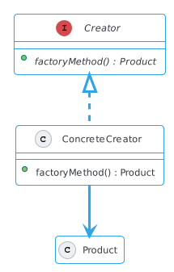
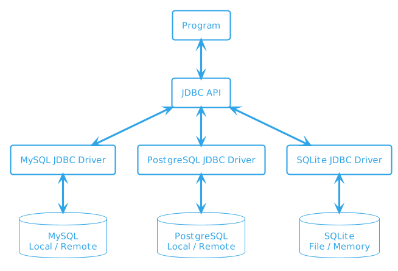
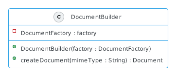
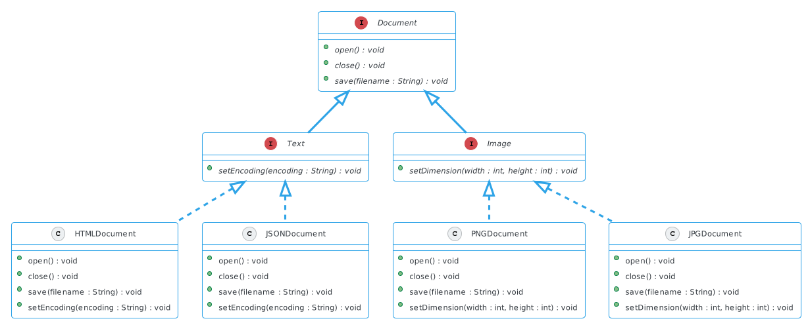
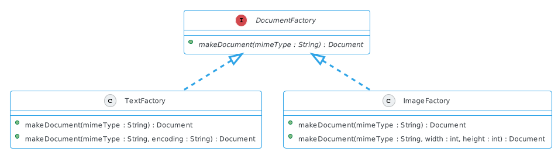

Factory method pattern
Contents
Factory method pattern#
Het factory method pattern is een manier om objecten te instantiëren zonder exact vast hoeven te leggen van welke klasse deze objecten zullen zijn.
Het patroon voorziet in loose coupling door de verantwoordelijkheid van het aanmaken van instanties te delegeren aan specifieke subklassen.
Mogelijkheden#
Wanneer je niet op voorhand weet welk klasse object je nodig hebt
pas tijdens runtime bekend
Wanneer alle potentiële klassen in dezelfde subklassenhiërarchie staan
Om code voor selectie van klasse te centraliseren
Wanneer je niet wil dat de gebruiker elke subklasse moet kennen
Om objectcreatie in te kapselen (verbergen van details)
Implementatie#

Definieer een interface voor het aanmaken van een object, maar laat subklassen beslissen welke klasse te instantiëren. Met andere woorden, de factory method delegeert de instantie die wordt gebruikt naar de subklassen.

Een bekend voorbeeld van dit patroon kan je vinden in de Java JDBC API. Deze API definieert een interface waar database drivers (klassen die een specifieke database kunnen aanspreken).
Welke driver moet worden gebruikt is tijdens runtime bekend, bijvoorbeeld via een configuratie. Zo is het mogelijk dat tijdens ontwikkeling een driver voor SQLite wordt gebruikt, maar in productie een PostgreSQL driver.
import java.sql.*;
public class JdbcExample {
public static void main(String[] args) throws SQLException {
Connection con = DriverManager.getConnection(
"jdbc:mysql://localhost:3306/myDb", "user1", "pass");
Statement stmt = con.createStatement();
String selectSql = "SELECT * FROM employees";
ResultSet resultSet = stmt.executeQuery(selectSql);
// ...
}
}
Je kan hier afleiden dat DriverManager een factory klasse is. Op basis van een connection string en eventuele andere parameters (gebruikersnaam, wachtwoord) zal het een connectie naar de database teruggeven met een driver specifiek voor deze database. De details van de implementatie blijven voor ons onbekend (welke driver klasse gebruikt moet worden, hoe de connectie wordt opgezet, etc.).
Een voorbeeld#

Documenten moeten worden aangemaakt en kunnen worden opgeslagen. Het formaat van deze documenten kan verschillen inclusief mogelijke manieren van opslag. Dit zijn details die worden uitgewerkt in verschillende subklassen.

Welk document type wordt gebruikt wordt overgelaten aan een factory, deze heeft kennis van de verschillende typen en voor clients (klassen die gebruik maken van Document’s) volstaat deze interface, méér kennis is niet nodig. Op deze manier wordt gezorgd voor encapsulatie en loose coupling.
Een interface wordt hier gebruikt, maar dit zou natuurlijk ook een abstracte klasse kunnen zijn, beide dwingen een implementatie af.
public class TextFactory {
public Document makeDocument(String mimeType) throws IllegalArgumentException {
Document file;
if (mimeType.equals("text/html")) {
file = new HTMLDocument();
} else if (mimeType.equals("application/json")) {
file = new JSONDocument();
} else if (mimeType.equals("application/x-latex")) {
file = new LaTeXDocument();
} else {
throw new IllegalArgumentException("Unsupported MIME type");
}
return file;
}
}
De implementatie van de methode makeDocument zou als volg kunnen zijn waar op basis van een mime type het een instantie van de correcte klasse wordt teruggegeven. Dit principe lijkt op wat je eerder bij het JDBC API voorbeeld hebt gezien.

Een client klasse DocumentBuilder die de factory kan gebruiken zonder de specifieke implementatie te kennen voor het aanmaken en bewaren van documenten.
public class DocumentBuilder {
private DocumentFactory document;
public DocumentBuilder(DocumentFactory factory) {
this.factory = factory;
}
private createDocument(String mimeType) {
try {
return factory.makeDocument(mimeType);
catch (IllegalArgumentException e) {
// ...
}
}
}
Een familie van objecten#
Abstract Factory Pattern
Definieert een interface voor het creëren van families van gerelateerde of afhankelijke objecten zonder de concrete klassen klassen direct te instantiëren.

In het vorige voorbeeld was een interface gedefinieerd voor het creëren van enkele documenten. Maar wat nu als je te maken hebt met objecten uit een grotere familie die moet worden aangemaakt?

Door gebruik te maken van de interface kunnen de meerdere factories worden gedefinieerd die verschillende (maar onderscheiden) typen objecten kunnen aanmaken.